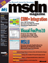
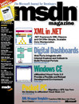
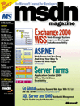
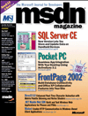
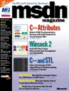
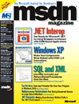

MSDN
• C# and the Web: Writing a Web Client Application with Managed Code in the Microsoft .NET Framework
• ASP .NET: Collect Customer Order Information on an Internet Site Using XML and Web Forms
• .NET Migration Case Study: Using ASP .NET to Build the beta.visualstudio.net Web Site
• Windows Management Instrumentation: Create WMI Providers to Notify Applications of System Events
Формат файла: Файл CHM
Язык: Английский
Язык: Английский

3.07M

• Visual FoxPro 7.0: Program Your Data with Powerful New COM, XML, and Web Services Support
• MSLU: Develop Unicode Applications for Windows 9x Platforms with the Microsoft Layer for Unicode
• BizTalk: Implement Design Patterns for Business Rules with Orchestration Designer
• ISAPI Extensions: Creating a DLL to Enable HTTP-based File Uploads with IIS
• Win32 Resources: Using C++ to Programmatically Retrieve a Global Cursor's Shape and ID
• ISAPI Filters: Designing SiteSentry, an Anti-Scraping Filter for IIS
Формат файла: Файл CHM
Язык: Английский
Язык: Английский
2.53M

• Digital Dashboards: Web Parts Integrate with Internet Explorer and Outlook to Build Personal Portals
• Windows CE: eMbedded Visual Tools 3.0 Provide a Flexible and Robust Development Environment
• Pocket PC: Migrating a GPS App from the Desktop to eMbedded Visual Basic 3.0
• XML Wrapper Template: Transform XML Docs into Visual Basic Classes
Формат файла: Файл CHM
Язык: Английский
Язык: Английский
1.64M
• Windows Forms: A Modern-Day Programming Model for Writing GUI Applications
• .NET Framework: Building, Packaging, Deploying, and Administering Applications and Types
• Web Services: Building Reusable Web Components with SOAP and ASP.NET
• Security in .NET: Enforce Code Access Rights with the Common Language Runtime
• .NET P2P: Writing Peer-to-Peer Networked Apps with the Microsoft .NET Framework
Формат файла: Файл CHM
Язык: Английский
Язык: Английский
1.39M
• Microsoft .NET: Implement a Custom Common Language Runtime Host for Your Managed App
• Resource Leaks—More Efficient Windows Apps: Detecting, Locating, and Repairing Your Leaky GDI Code
• .NET Framework: Building, Packaging, Deploying, and Administering Applications and Types—Part 2
• COM: Handle Late-bound Events within Visual Basic Using an ATL Bridge
• Graphics: Manipulate Digital Images in Internet Explorer with the DirectX Transform SDK
• COM+: Create a Compensating Resource Manager to Extend Your App's Transactional Features
Формат файла: Файл CHM
Язык: Английский
Язык: Английский
1.66M

• ASP.NET: Web Forms Let You Drag and Drop Your Way to Powerful Web Apps
• Server Farms: Application Center 2000 Offers World-Class Scalability
• Go Global: Localizing Dynamic Web Apps with IIS 5.0 and SQL Server
• SQL Server and DMO: Distributed Management Objects Enable Easy Task Automation
Формат файла: Файл CHM
Язык: Английский
Язык: Английский
1.33M

• Pocket PC: Seamless App Integration with Your Desktop using ActiveSync 3.1
• FrontPage 2002: Build Database Connectivity and Office XP Collaboration Features into Your Site
• DirectX 8.0: Enhancing Real-Time Character Animation with Matrix Palette Skinning and Vertex Shaders
• .NET Mobile Web SDK: Build and Test Wireless Web Applications for Phones and PDAs
• WinInet: Enable HTTP Communication in Windows-Based Client Applications
Формат файла: Файл CHM
Язык: Английский
Язык: Английский
2.06M
• C++ -> C#: What You Need to Know to Move from C++ to C#
• Windows UI: Our WinMgr Sample Makes Custom Window Sizing Simple
• Visual Studio .NET: Managed Extensions Bring .NET CLR Support to C++
• Design Patterns: Solidify Your C# Application Architecture with Design Patterns
Формат файла: Файл CHM
Язык: Английский
Язык: Английский
1.24M

• Winsock 2: QoS API Fine-Tunes Networked App Throughput and Reliability
• C++ and STL: Take Advantage of STL Algorithms by Implementing a Custom Iterator
• SOAP Toolkit 2.0: New Definition Languages Expose Your COM Objects to SOAP Clients
• Windows Script Host: New Code-Signing Features Protect Against Malicious Scripts
• SSL: Protect Your E-Commerce Web Site with SSL and Digital Certificates
Формат файла: Файл CHM
Язык: Английский
Язык: Английский
3.78M

• Windows XP: Make Your Components More Robust with COM+ 1.5 Innovations
• SQL and XML: Use XML to Invoke and Return Stored Procedures Over the Web
• Fax Services: Send Any Printable File From Your Program in Windows 2000
• Multiprocessor Optimizations: Fine-Tuning Concurrent Access to Large Data Collections
• .NET Delegates: Making Asynchronous Method Calls in the .NET Environment
Формат файла: Файл CHM
Язык: Английский
Язык: Английский
2.24M